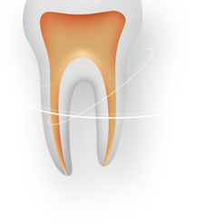

홍윤의 치과

BRANDN CONCEPT
01 최고의 치료
-
아름다은 미소를 만들어줄 대표원장 치의학 전문의 홍윤의 입니다.
홍윤의 치과의원은 대표원장이 직접 상담, 진단, 치료, 평생 유지관리 모든 과정을 책임집니다.
저는 다년간 오직 치과치료만 전문적으로 하면서 누구나 만족하는 인정할 수 있는 실력을
갖추도록 노력해왔습니다. 최상의 진료 / 최고의 실력 / 최선의 노력 이라는 신념은 항상 변치
않을 것입니다.
또한, 수많은 진료과 경험을 통해 환자 개개인의 치아를 위해 치료계획을 제안해 드리고
공감과 소통을 통해 환자분들의 의견을 적극 수용하겠습니다. -
홍윤의 치과의원
수많은 학술 분야 활동과 연구를 바탕으로 오로지 치아 치료와 연구에만 전념해 왔으며
환자분들의 시간과 비용, 노력으로 치료과정에 만족을 넘어 주위분들에게도 마음 껏
추천할 수 있는 진료를 약속하겠습니다.
치과는 더 이상 불편하고 부담스러운 병원이 아닙니다.
치아 건강은 물론 평온한 마음과 미소까지 되찾게 하는 병윈이 되고, 우수한 진료시스템과
의료 서비스로 환자분들의 든든한 반석이 되겠습니다.
DENTAL CLINIC
02 치의학 전문의
-
치과 치료뿐만 아니라 치과의사들을 교육시키는 치의학 전문의
홍윤의 입니다. - - American borard certified dentist
- - 뉴욕대학교 (NYU) 치대 임플란트/치주과 교수
- - 삼성서울병원 치과진료부 외래 부교수
- - 미국 임플란트학회 (AO) 초청연자 (Boston 2008)
- - 세계 치과 레이져 학회 초청연자 (San Diego 2008)
- - Diplomate, American Borard of Periodontology
- - 뉴욕대학교 (NYU) 치과대학 졸업
- - 뉴욕대학교 (NYU) 보철과 전문의 과정 수학
- - 뉴욕대학교 (NYU) 치주과 전문의 과정 수석졸업
- - 미국 보드 Certified 치주과 전문의
- - Master Clinician Award, NYU 치과대학 (2006)
- - Licensed to practice in New York & NJ
- - 대한 구강악안면 임플란트학회 국제이사
환자를 가족처럼
홍윤의 치과의원
환자분의 고민과 아픔, 몸 뿐만 아니라 마음까지
치유 될 수 있도록 양심적인 진료로 따뜻한 치료를
하겠습니다.
학력
- - 럿거스 미국 뉴져지 주립대학에서 치의예과 졸업
- - 미국 뉴욕대학교(New York University) 치과대학 졸업, 치의학박사
- - 미국 뉴욕대학교(New York U) 치과대학 보철과 전문의 과정 수학
- - 미국 뉴욕대학교 치과대학 치주과 전문의 과정 수료
경력
- - 미국 치과의사 면허 소유의사
- - 미국 치주과 보드 인정의
- - 미국 뉴욕대학교 치대 치주과 전문의과정 임상조교수 역임
- - 서울 삼성병원 치과진료부 외래정교수 현재
- - 뉴욕대학교 치주/임플란트 한국 연구회 창립자 및 디렉터
- - 2006년도 뉴욕대학교 치과대학교 최우수 임상가상 수상
- - 뉴욕대학교 치대 치주과 선임 전공의 역임
- - 미국 뉴욕주, 뉴져지주, 택사스주에서 19년간 진료, 임상, 병원 운영
- - 싱가폴 세인트 앤드류스 치과병원 상임 수술의사 역임
- - 싱가폴 아시아 핼스 치과병원 상임 수술의사
- - 미국 보스톤 임플란트 학술대회 초청 강사
- - 호주 골드코스트 임플란트 학술대회 초청 강사
- - 국제 및 국내 임플란트 강의 200회 이상
- - 북경 오스템 임플란트 심포지움 실시간 수술 재연
- - 1991년부터 27년간 20,000 개 이상의 임플란트 수술 및 보철치료
전문 분야
- - 고급과정의 임플란트 수술
- - 수평적 수직적 치조골 증대술
- - 고급과정의 골 유도 재생술
- - 상악동 골 증대술
- - 발치 후 골 증대술
- - 결합 연조직 이식술
- - 치조정 분리 수술
- - 수술적/ 비수술적 사용중인 임플란트 주변의 염증 수술
- - 복잡한 상악/ 하악 같은 전악 보철치료
치과의사 면허
- - 한국
- - 미국
- - 싱가폴